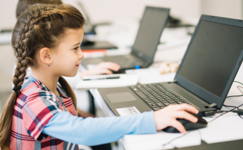

နည်းပညာခေတ်မှာ ကလေးတွေ မျက်လုံးမထိခိုက်အောင် ဘယ်လိုကာကွယ်ကြမလဲ

နည်းပညာခေတ်မှာ ကလေးတွေ မျက်လုံးမထိခိုက်အောင် ဘယ်လိုကာကွယ်ကြမလဲ
ဒီနေ့ခေတ်အခါမှာ ကလေးတွေနဲ့ နည်းပညာကို ခွဲခြားလို့ မရပါဘူး။ ပညာရေးအတွက်ပဲ ဖြစ်ဖြစ် အပျော်လဲ ဖြစ်ဖြစ် ကွန်ပျူတာနဲ့ ဖုန်းမျက်နှာပြင်ကို ကြည့်တဲ့ အချိန်က တစ်နေ့တာမှာ နာရီများစွာ နေရာယူထားပါတယ်။
ဒီလို ဒီဂျစ်တယ် မျက်နှာပြင်ကို ကြည့်တာများတာက အမြင်အာရုံကို ထိခိုက်လာနိုင်ပါတယ်။
ဒီဂျစ်တယ်မျက်နှာပြင် အကြည့်များတာကြောင့် ဘယ်လိုပြဿနာတွေ ကြုံရနိုင်သလဲ။
ကွန်ပြူတာ အကြည့်များရောဂါ (Computer Vision Syndrome)
ဒီဂျစ်တယ် နည်းပညာကြောင့် မျက်လုံးဒဏ်ဖြစ်ခြင်းလို့လည်း ခေါ်ပါတယ်။ အမြင်အာရုံဝါးတာ၊ မျက်လုံးညောင်းတာ၊ ခြောက်တာ၊ ခေါင်းကိုက်တာ၊ ပင်ပန်းနွမ်းနယ်တာတွေ ပါဝင်ပါတယ်။ လည်ပင်း၊ ကျောနဲ့ ပခုံးနာကျင်တာတွေကိုပါ ဖြစ်စေပါတယ်။
ကိုယ်နေကိုယ်ထား မမှန်ခြင်း
ကွန်ပြူတာနဲ့ ဖုန်းတွေကို အကြာကြီးသုံးတဲ့ အချိန်မှာ လက်ပြင်ကုန်း ခါးကိုင်းပြီး ခေါင်းရှေ့စိုက် သုံးတတ်ကြပါတယ်။ Turtling လို့ ခေါ်တဲ့ ဒီကိုယ်နေဟန်ထားကြောင့် လည်ပင်းနာခြင်း ပခုံးနာခြင်းတွေကို ဖြစ်စေပါတယ်။
အဝေးမှုန်ခြင်း
ကလေးတွေမှာ ကွန်ပြူတာ၊ ဖုန်း အသုံးများတာနဲ့ အဝေးမှုန်တာနဲ့ ဆက်စပ်မှုရှိနေတယ်လို့ သုတေသနပြုချက်တွေအရ တွေ့ရှိရပါတယ်။ ပြီးခဲ့တဲ့ ဆယ်စုနှစ်တွေမှာ နည်းပညာ တိုးတက်လာတာနဲ့ လိုက်ပြီး အဝေးမှုန်ဖြစ်တဲ့နှုန်းလဲ သိသိသာသာ မြင့်တက်လာပါတယ်။
အပြာရောင်အလင်းနှင့် အချိန်ကြာကြာ ထိတွေ့ရခြင်း
ကွန်ပြူတာ နဲ့ ဖုန်းတွေရဲ့ LED မျက်နှာပြင်တွေက စွမ်းအင်မြင့် အပြာရောင်အလင်းတွေ ထုတ်လွှတ်ပါတယ်။ နေရောင်ကလည်း အပြာရောင်အလင်းပါပေမဲ့ ဒီဂျစ်တယ် မျက်နှာပြင်က ထုတ်တဲ့ အပြာရောင် အလင်းတန်းတွေက မျက်လုံးကို ထိခိုက်စေပြီး အချိန်ကြာလာတဲ့အခါမှာ Macular Degenaration လို့ ခေါ်တဲ့ မျက်လုံးရောဂါကို ဖြစ်စေပါတယ်။
ကျန်းမာရေးထိခိုက်မှု မရှိအောင် ဘာတွေ လုပ်ရမလဲ
ဒီခေတ်အခါမှာ ကလေးတွေကို ကွန်ပြူတာနဲ့ ဖုန်းမသုံးဘဲ နေခိုင်းလို့ မရပါဘူး။ ဒါကြောင့်မ်ို့ မျက်စိထိခိုက်မှုကို လျော့ချနိုင်တဲ့ နည်းလမ်းတွေကို ရှာဖွေရမှာပါ။
အဲ့ဒီနည်းလမ်းတွေကတော့-
မျက်လုံးကို အနားပေးပါ
မျက်လုံးကို အနားပေးဖို့အတွက် ၂၀-၂၀-၂၀ စည်းမျဉ််းဆိုတာ ရှိပါတယ်။ LED မျက်နှာပြင်ကို မိနစ် ၂၀ ကြည့်ပြီးတိုင်း ပေ၂၀ အကွာကို စက္ကန့် ၂၀ ခန့် ကြည့်ပေးပါ။ ဒီလိုလုပ်ပေးခြင်းက မျက်လုံးဒဏ် ဖြစ်တာကို သက်သောစေနိုင်သလို အဝေးမှုန်နိုင်ခြေကိုလည်း လျော့ကျစေနိုင်ပါတယ်။
ကို်ယ်နေဟန်ထားမှန်အောင် မကြာခဏ ပြင်ပေးပါ
၂၀-၂၀-၂၀- စည်းမျဉ်းအရ မျက်လုံးအနားယူတဲ့ အချိန်ဟာ ကျောဆန့်၊ ခေါင်းမတ်ပြီး ကိုယ်နေဟန်ထားကို ပြင်ပေးဖို့ အကောင်းဆုံး အချိန်ပါ။ ဦးခေါင်းကို ဘယ်ညာ အပေါ်အောက် ဖြည်းဖြည်းချင်း လှည့်ပေးခြင်းကလည်း လည်ပင်းနဲ့ ပုခုံးကြွက်သား ညောင်းညာ နာကျင်မှုကို လျှော့နိုင်ပါတယ်။ တတ်နိုင်ရင် လမ်းထလျှောက်ပြီး အကြောလျှော့ ပေးတာက အကောင်းဆုံးပါ။
အပြာရောင်အလင်းကနေ ကာကွယ်ပါ
ကွန်ပြူတာနဲ့ ဖုန်းမျက်နှာပြင်တွေက ထွက်တဲ့ အပြာရောင်အလင်းက မျက်လုံးကို ဘယ်လောက် အထိ ဒုက္ခပေးနိုင်တာကို တိတိကျကျ မသိရသေးပါဘူး ။ ဒါပေမဲ့ ရေရှည်ထိတွေ့တဲ့အခါမှာ အန္တရာယ် ရှိလာနိုင်တဲ့အတွက် ကာကွယ်သင့်ပါတယ်။
အပြင်ထွက်တဲ့ အခါမှာ နေရောင်ကို ကာကွယ်ဖိုအတွက် ပိုလာရွိုတ်နေကာမျက်မှန် ( Polarized Sunglasses) တွေကို ဝတ်ဆင်လို့ ရပါတယ်။ Photochromic Lenses နဲ့လုပ်ထားတဲ့ မျက်မှန်တွေကိုတော့ အိမ်တွင်းရော အိမ်ပြင်ပါ ဝတ်လို့ ရပါတယ်။ အိမ်တွင်းမှာပဲ သုံးနိုင်တဲ့ အပြာရောင်အလင်းကို စစ်ထုတ်ပေးတဲ့ မျက်မှန်တွေလည်း ရှိပါသေးတယ်။
မသုံးရ အချိန် သတ်မှတ်ပေးပါ
ဒီိလို အချိန်တွေ သတ်မှတ်ပေးတာကြောင့် မျက်လုံး ကျန်းမာရေးကို ကောင်းစေရုံသာမကဘဲ ကလေးတွေ နည်းပညာ စွဲလန်းခြင်းကို လျှော့ပေးနိုင်ပြီး မိသားစု ရင်းနှီးမှု ပိုရစေပါတယ်။
br>
နှစ်စဉ် မျက်လုံးစစ်ဆေးမှု ခံယူပါ
ကလေးငယ်တွေကို ကျောင်းဖွင့်ရာသီ မတိုင်ခင် မျက်လုံးကို တစ်နှစ်တစ်ကြိမ်စစ်ဆေးသင့်ပါတယ်။ ဒီလို စစ်ဆေးတာကြောင့် ကလေးမျက်လုံးကျန်းမာရေး ကောင်း၊ မကောင်း သိရှိနိုင်ပြီး ပြဿနာတစ်ခုခု ရှိတယ်ဆို အမြန်ဆုံး ကုသမှုခံယူနိုင်မှာ ဖြစ်ပါတယ်။
Source-Dr.MTA